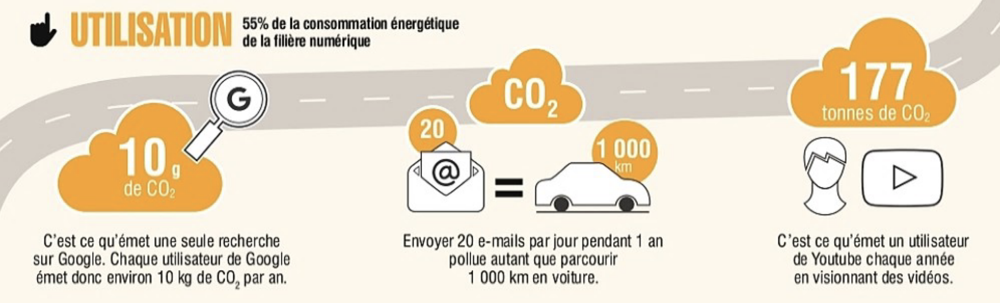

Table des matières de la page
La population augmente de façon exponentielle et donc la masse de documents que nous produisons s’accroît elle aussi pour témoigner de chacune de nos vies. La fabrication auparavant plus artisanale du papier a tranquillement évolué pour laisser place à la mécanisation des procédés que l’industrialisation a ensuite permis d’optimiser pour répondre à sa demande grandissante. Puis, nous voilà maintenant projetés à l’ère numérique, où les technologies évoluent et se multiplient à vitesse grand V et où le support papier est remplacé peu à peu par le support numérique. On parle ici de dématérialisation.
Tel qu’expliqué sur le site Web de Archimag, « Dématérialiser ses documents consiste à remplacer les documents au format papier de son organisation par des fichiers numériques, ou bien à les produire directement au format numérique via son système d’information (dématérialisation native). » ( Citation: S.A., (S.A.). (s.d.). Consulté à l’adresse https://www.archimag.com/tags/d%C3%A9mat%C3%A9rialisation )
Le numérique a bien sûr plusieurs avantages sur le papier : rapidité de repérage et de transmission des documents électroniques, gain d’espace par la densification du stockage, automatisation des processus, sécurité améliorée par la redondance et les copies de sauvegarde, plus grande facilité de gestion des accès. De l’autre côté de la médaille, est-ce que le numérique peut vraiment prétendre être plus durable, plus sécuritaire que le papier?
Mais la grande question que je me pose est : est-ce qu’un bureau sans papier est nécessairement un bureau plus écologique? La question vaut la peine qu’on s’y attarde alors que l’urgence climatique se fait de plus en plus ressentir. Tout comme dans bien d’autres domaines, il ne faudrait pas se laisser berner par le marketing vert.
Caroline Buscal soulève d’ailleurs cette problématique : « l’empreinte carbone des projets numériques est insuffisamment prise en compte dans les projets de dématérialisation. Pourtant, le numérique représente 4 % des gaz à effet de serre (GES), et doublera d’ici 2025. » ( Citation: Guerre, 2021 Guerre, L. (2021). De la dématérialisation écoresponsable à la permaentreprise : visionnez le replay de la journée événement Archimag !. Archimag. Consulté à l’adresse https://www.archimag.com/demat-cloud/2021/10/25/dematerialisation-ecoresponsable-permaentreprise-archimag )
C’est pourquoi je tenterai de décortiquer sommairement l’impact environnemental de ce changement de l’analogique vers le numérique. Pour simplifier l’analyse, je ne m’attarderai que sur le papier comme support analogique puisqu’il est le plus répandu dans la majorité des organismes producteurs d’archives.
L’impact environnemental du bureau sans papier #
Pour bien définir l’empreinte environnementale des documents papier versus les documents numériques, il est important de considérer l’ensemble du cycle de vie de chacun, soit de la fabrication en passant par le transport, l’utilisation (ou la simple consultation) puis l’élimination.
Dans le cas du papier, en plus de la matière première (le bois), il est reconnu que sa fabrication requiert beaucoup d’eau et que des produits chimiques sont utilisés autant dans sa composition que pour le blanchir. Le Canada étant un des grands producteurs de pâtes et papiers, le transport peut donc être négligeable si l’on s’assure d’acheter du papier produit ici. Encore mieux lorsque celui-ci est certifié FSC (Forest Stewardship Council) et/ou est fait de matière recyclée. La consommation d’encre ainsi que l’énergie nécessaire à son impression ne sont pas non plus à négliger. Quant à sa consultation, celle-ci ne nous demande généralement que de bruler quelques calories pour aller retrouver le document désiré dans le classeur, on pourra donc consulter les documents papier autant de fois que nécessaire sans pour autant requérir à plus de ressources énergétiques. Le grand point fort du papier vient aussi de sa fin de vie puisque c’est une matière facilement recyclable et grandement recyclée. Le cycle est finalement bouclé quand nos vieilles paperasses sont transformées en nouvelles feuilles blanches, quoique le processus de désencrage produit lui aussi des polluants et requiert de l’eau, en moins grande quantité cependant.
Pour ce qui est du numérique, il « n’est pas si immatériel que cela puisque pour pouvoir visionner quelque chose, il faut bien un support. » ( Citation: Petit, 2016 Petit, P. (2016). Papier vs. support numérique : quel impact environnemental ?. ConsoGlobe. Consulté à l’adresse https://www.consoglobe.com/duel-papier-vs-numerique-cg ) Le terme « dématérialisation » est-il vraiment approprié dans ce cas?
La fabrication des divers équipements informatiques nécessite quant à elle minerais, métaux lourds, nombreux produits chimiques et encore beaucoup d’eau. Considérons aussi leur transport jusqu’à nous, souvent depuis l’autre côté de la planète, depuis des pays où les conditions de travail des employés et le contrôle des rejets toxiques laissent grandement à désirer. L’empreinte de l’utilisation du numérique est cependant moins tangible pour les utilisateurs puisque tout se passe souvent à l’écart de ce que nous percevons, un peu comme nos déchets qui semblent disparaitre miraculeusement une fois le camion de vidange passé. Peu importe la quantité d’information qu’il contient à un moment précis, un ordinateur ou un serveur gardera la même taille physique, contrairement à la pile de dossiers que l’on pouvait voir s’accumuler autrefois sur nos bureaux.
Tel que l’expose Eric Vidalenc à la fin de son article L’invisible poids environnemental du numérique ( Citation: Vidalenc, 2020 Vidalenc, É. (2020). L’invisible poids environnemental du numérique. Magazine FORMES. Consulté à l’adresse http://www.formes.ca/environnement/articles/le-poids-environnemental-du-numerique ) , une plus grande transparence face au réel impact de notre activité numérique est nécessaire pour que tous prennent pleinement conscience de l’empreinte carbone de ses processus quotidiens. Chaque clic et chaque requête que nous faisons en ligne sont enregistrés pour accumuler le plus de données à notre sujet, et pourtant aucune statistique n’est recueillie sur l’énergie qui a été nécessaire à ces requêtes. D’après les études, « le “poids” d’une seule recherche Google est déjà estimé à 10 grammes en équivalent-carbone. » ( Citation: Petit, 2016 Petit, P. (2016). Papier vs. support numérique : quel impact environnemental ?. ConsoGlobe. Consulté à l’adresse https://www.consoglobe.com/duel-papier-vs-numerique-cg ) Nous pouvons alors faire un parallèle avec un serveur d’entreprise stocké en infonuagique par exemple pour avoir une idée de sa consommation énergétique.
 ( Citation: Guerre, 2021 Guerre, L. (2021). Empreinte carbone et sobriété numérique : comment agir ?. Archimag. Consulté à l’adresse https://www.archimag.com/demat-cloud/2021/10/07/empreinte-carbone-sobriete-numerique-comment-agir )
On peut aussi faire une distinction entre les documents numérisés et ceux qui sont nés numériques, car le simple fait de numériser des documents papier contribue en effet à l’empreinte carbone de la dématérialisation.
Puis contrairement au papier, le matériel informatique est peu recyclé en réalité (même malgré notre effort de l’apporter à l’écocentre pour s’en départir). Dans son rapport Suivi des déchets d’équipements électriques et électroniques à l’échelle mondiale pour 2020, le Global E-waste Statistics Partnership (GESP) constate que seulement 17,4 % des déchets d’équipements électriques et électroniques (DEEE) ont réellement été recyclés en 2019. ( Citation: Forti, Baldé & al., 2020 Forti, V., Baldé, C., Kuehr, R. & Bel, G. (2020). Suivi des déchets d’équipements électriques et électroniques à l’échelle mondiale pour 2020 . L'Université des Nations Unies/Institut des Nations Unies pour la formation et la recherche et l'Union internationale des télécommunications Consulté à l’adresse https://globalewaste.org/proxy/?publication=/v1/file/271/The-Global-E-waste-Monitor-2020-Quantities-flows-and-the-circular-economy-potential.zip ) Ce serait donc « 53,6 millions de tonnes de déchets électroniques [produits], soit une croissance de 21 % en 5 ans. » ( Citation: Bordage, 2020 Bordage, F. (2020). Déchets électroniques : + 21 % en 5 ans. Green IT. Consulté à l’adresse https://www.greenit.fr/2020/07/03/dechets-electroniques-21-en-5-ans/ ) Comme le dit si bien Vidalenc : « Pas brillant pour un secteur qui incarne la dématérialisation et l’allègement des impacts environnementaux. » ( Citation: Vidalenc, 2020 Vidalenc, É. (2020). L’invisible poids environnemental du numérique. Magazine FORMES. Consulté à l’adresse http://www.formes.ca/environnement/articles/le-poids-environnemental-du-numerique ) Et pire encore, les appareils sont généralement difficiles à réparer pour allonger leur durée de vie. L’obsolescence des supports et des équipements est un réel fléau qui porte à réfléchir sur la durabilité dans le temps de ces nouveaux formats d’archives.
On peut aussi penser au matériel d’entreposage des archives semi-actives et inactives : généralement des boites de carton recyclables et étagères de métal pour l’un, serveurs et autres équipements informatiques énergivores pour l’autre. Il est toutefois aussi possible de conserver les archives numériques sur des disques durs sans que ceux-ci soient branchés et « tournent » en permanence. Les documents ne seraient cependant pas disponibles à tout moment, pour un accès en ligne par exemple, il faudrait d’abord en faire la demande pour les consulter. Cette méthode nécessiterait alors beaucoup moins d’énergie, en plus d’augmenter grandement la durée de vie des disques, les requêtes y étant moins fréquentes.1 Le choix de la technologie utilisée par les centres d’archives est donc un facteur à considérer pour réduire l’empreinte écologique de l’entreposage des documents. Les systèmes de bandes LTO (Linear Tape-Open) sont probablement une alternative mieux adaptée pour minimiser cette consommation, mais une comparaison complète, selon l’ensemble des besoins et incluant l’aspect financier, avec un système de disques durs traditionnels sera nécessaire. Parce que oui, malgré toutes nos bonnes volontés, c’est parfois, voire souvent, le manque de ressources qui nous fait pencher vers l’option plus polluante.
Plus la durée de consultation et de conservation est courte, plus le support numérique est adapté. ( Citation: Petit, 2016 Petit, P. (2016). Papier vs. support numérique : quel impact environnemental ?. ConsoGlobe. Consulté à l’adresse https://www.consoglobe.com/duel-papier-vs-numerique-cg )
On réalise finalement que la quantification de l’énergie et des ressources nécessaires à ces deux cycles de vie est difficile à établir et les différentes études sur le sujet le confirment en apportant plusieurs nuances dans leurs hypothèses. C’est le cas surtout à l’étape de l’utilisation qui varie grandement selon la nature du document par exemple. Car, dans le cas du numérique, ordinateurs, tablettes, téléphones intelligents, câbles, serveurs et tout l’équipement informatique nécessaire ne servent pas seulement qu’à créer et consulter des documents, mais sont plutôt des outils multidisciplinaires tels qu’énoncé par Jean-Sébastien Trudel dans La Presse. ( Citation: Trudel, 2010 Trudel, J. (2010). L’iPad: un ami des arbres. Consulté à l’adresse https://www.lapresse.ca/opinions/201006/03/01-4286632-lipad-un-ami-des-arbres.php )
Vers une sobriété numérique? #
Il est clair que le format numérique est indéniablement plus pratique que le papier. Mais il ne faudrait pas croire que parce qu’on ne le voit pas de manière tangible, il ne contribue pas à notre empreinte environnementale. Bien au contraire, par sa facilité et les infinies possibilités qu’il nous offre, il ne fait que multiplier la masse documentaire produite et par conséquent, l’énergie et les ressources consommées par les requêtes engendrées.
Mais les questions soulevées par Christian Dubourg dans son récent billet ( Citation: Dubourg, 2021 Dubourg, C. (2021). Introduction à l’Indicateur de sobriété numérique d’un SAE. Convergence AAQ. Consulté à l’adresse https://archivistesqc.wordpress.com/2021/11/15/gestion_ecoenergetique/ ) me font réaliser qu’il faudra trouver un équilibre dans cette explosion documentaire. Bien que les archives au format numérique facilitent grandement leur diffusion et leur recherche, ce qui correspond précisément à un des grands buts de l’archivistique après tout, cette accessibilité rapide et continuelle a un impact énergétique, et donc environnemental, sur lequel on doit aussi se pencher.
Un nouveau terme voit d’ailleurs le jour, celui de la sobriété numérique. « Utilisé pour la première fois en octobre 2008 par l’association GreenIT.fr, [la sobriété numérique] vise à réduire l’empreinte environnementale du numérique, en vue d’atteindre les objectifs fixés par l’accord de Paris. » ( Citation: Guerre, 2021 Guerre, L. (2021). Empreinte carbone et sobriété numérique : comment agir ?. Archimag. Consulté à l’adresse https://www.archimag.com/demat-cloud/2021/10/07/empreinte-carbone-sobriete-numerique-comment-agir ) On peut alors se poser la question : avons-nous vraiment besoin de tous ces documents dans nos processus, de toutes ces copies, de tous ces courriels? La réponse sera généralement oui, pour leurs valeurs administrative et légale surtout. Mais alors comment peut-on faire en sorte de rendre leur utilisation et leur conservation plus respectueuse de l’environnement? Prendre conscience du facteur écologique dans nos décisions (et achats d’équipements) est assurément la première étape…
Sur ce, je m’en vais de ce pas me désabonner de toutes ces infolettres inutiles et énergivores, repenser mon utilisation des services en infonuagique et peaufiner les réglages de mes appareils. Ma résolution pour 2022 est trouvée!
Bibliographie #
- Fonteneau (2021)
- Fonteneau, A.(2021, 6/16). Consulté à l’adresse https://information.tv5monde.com/info/liseuse-numerique-ou-papier-imprime-comment-limiter-l-impact-environnemental-413122
- (S.A.) (s.d.)
- (S.A.). (s.d.). Consulté à l’adresse https://www.archimag.com/tags/d%C3%A9mat%C3%A9rialisation
- Petit (2016)
- Petit, P. (2016). Papier vs. support numérique : quel impact environnemental ?. ConsoGlobe. Consulté à l’adresse https://www.consoglobe.com/duel-papier-vs-numerique-cg
- Dubourg (2021)
- Dubourg, C. (2021). Introduction à l’Indicateur de sobriété numérique d’un SAE. Convergence AAQ. Consulté à l’adresse https://archivistesqc.wordpress.com/2021/11/15/gestion_ecoenergetique/
- Guerre (2021)
- Guerre, L. (2021). Empreinte carbone et sobriété numérique : comment agir ?. Archimag. Consulté à l’adresse https://www.archimag.com/demat-cloud/2021/10/07/empreinte-carbone-sobriete-numerique-comment-agir
- Guerre (2021)
- Guerre, L. (2021). De la dématérialisation écoresponsable à la permaentreprise : visionnez le replay de la journée événement Archimag !. Archimag. Consulté à l’adresse https://www.archimag.com/demat-cloud/2021/10/25/dematerialisation-ecoresponsable-permaentreprise-archimag
- Vidalenc (2020)
- Vidalenc, É. (2020). L’invisible poids environnemental du numérique. Magazine FORMES. Consulté à l’adresse http://www.formes.ca/environnement/articles/le-poids-environnemental-du-numerique
- Bordage (2020)
- Bordage, F. (2020). Déchets électroniques : + 21 % en 5 ans. Green IT. Consulté à l’adresse https://www.greenit.fr/2020/07/03/dechets-electroniques-21-en-5-ans/
- Deluzarche (2021)
- Deluzarche, C. (2021). Quelle est l’empreinte carbone d’un e-mail ?. Futura. Consulté à l’adresse https://www.futura-sciences.com/planete/questions-reponses/eco-consommation-empreinte-carbone-e-mail-10840/
- Trudel (2010)
- Trudel, J. (2010). L’iPad: un ami des arbres. Consulté à l’adresse https://www.lapresse.ca/opinions/201006/03/01-4286632-lipad-un-ami-des-arbres.php
- Forti, Baldé, Kuehr & Bel (2020)
- Forti, V., Baldé, C., Kuehr, R. & Bel, G. (2020). Suivi des déchets d’équipements électriques et électroniques à l’échelle mondiale pour 2020 . L'Université des Nations Unies/Institut des Nations Unies pour la formation et la recherche et l'Union internationale des télécommunications Consulté à l’adresse https://globalewaste.org/proxy/?publication=/v1/file/271/The-Global-E-waste-Monitor-2020-Quantities-flows-and-the-circular-economy-potential.zip
- Duprat-Caouré (2020)
- Duprat-Caouré, S. (2020). Développez votre sobriété numérique !. Etourisme.info. Consulté à l’adresse https://www.etourisme.info/developpez-votre-sobriete-numerique/
Bordage, F. (2020, 3 juillet). Déchets électroniques : + 21 % en 5 ans. Green IT. https://www.greenit.fr/2020/07/03/dechets-electroniques-21-en-5-ans/
Deluzarche, C. (2021, 10 novembre). Quelle est l’empreinte carbone d’un e‑mail ? Futura. https://www.futura-sciences.com/planete/questions-reponses/eco-consommation-empreinte-carbone-e-mail-10840/
Dématérialisation : définition, actualité et enjeux. (s. d.). Archimag. https://www.archimag.com/tags/d%C3%A9mat%C3%A9rialisation
Dubourg, C. (2021, 15 novembre). Introduction à l’Indicateur de sobriété numérique d’un SAE. Convergence AAQ. https://archivistesqc. wordpress.com/2021/11/15/gestion_ecoenergetique/
Duprat-Caouré, S. (2020, 13 novembre). Développez votre sobriété numérique ! Etourisme.info. https://www.etourisme.info/developpez-votre-sobriete-numerique/
Fonteneau, A. (2021, 16 juin). Liseuse numérique ou papier imprimé : comment limiter l’impact environnemental ? TV5MONDE. https://information.tv5monde.com/info/liseuse-numerique-ou-papier-imprime-comment-limiter-l-impact-environnemental-413122
Forti, V., Baldé, C. P., Kuehr, R. et Bel, G. (2020). Suivi des déchets d’équipements électriques et électroniques à l’échelle mondiale pour 2020. L’Université des Nations Unies/Institut des Nations Unies pour la formation et la recherche et l’Union internationale des télécommunications. https://globalewaste.org/proxy/?publication=/v1/file/271/The-Global-E-waste-Monitor-2020-Quantities-flows-and-the-circular-economy-potential.zip
Guerre, L. (2021, 25 octobre). De la dématérialisation écoresponsable à la permaentreprise : visionnez le replay de la journée événement Archimag ! Archimag. https://www.archimag.com/demat-cloud/ 2021/10/25/dematerialisation-ecoresponsable-permaentreprise-archimag
Guerre, L. (2021, 7 octobre). Empreinte carbone et sobriété numérique : comment agir ? Archimag. https://www.archimag.com/demat-cloud/ 2021/10/07/empreinte-carbone-sobriete-numerique-comment-agir
Petit, P. (2016, 17 février). Papier vs. support numérique : quel impact environnemental ? ConsoGlobe. https://www.consoglobe.com/ duel-papier-vs-numerique-cg
Trudel, J.-S. (2010, 4 juin). L’iPad: un ami des arbres. La Presse. https://www.lapresse.ca/opinions/201006/03/01-4286632- lipad-un-ami-des-arbres.php
Vidalenc, É. (2020, 1 septembre). L’invisible poids environnemental du numérique. Magazine FORMES. http://www.formes.ca/environnement/ articles/le-poids-environnemental-du-numerique
-
Comme me l’avait expliqué notre technicien dans mon autre vie d’infographiste, alors que les disques durs de notre serveur interne et de notre système de sauvegarde arrivaient à leur fin de vie, nous avons pu les réutiliser pour l’archivage des projets complétés en les branchant seulement le temps de récupérer les fichiers désirés. Ceci évitait ainsi l’usure des disques (puisqu’ils étaient entreposés sans être en fonction) et étirait donc leur vie utile. ↩︎